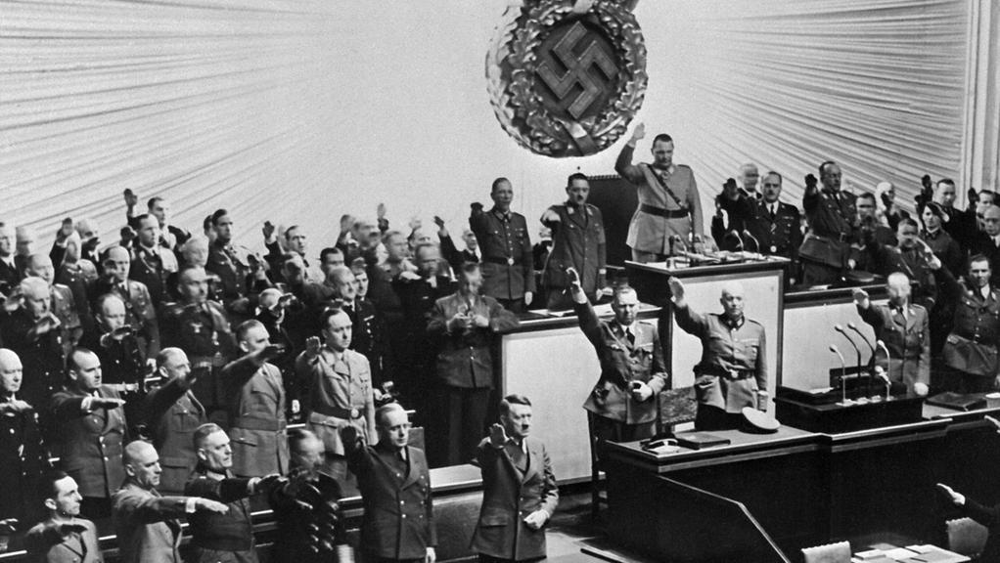

La Germania e il nazismo
dal 1925 al 1929 (Il partito nazista )
La propaganda nazista
Fa leva su un’adesione emotiva, istintiva e irrazionale, alimentata da un uso moderno e spregiudicato dei mezzi massa.
dal 1925 al 1929 (Il partito nazista )
Fa leva su un’adesione emotiva, istintiva e irrazionale, alimentata da un uso moderno e spregiudicato dei mezzi massa.
Le politiche razziste e repressive del nazismo furono accompagnate da una vasta opera di manipolazione delle coscienze coordinata dal potentissimo ministro per l’educazione e la propaganda, Joseph Goebbels. Radio, cinema, adunate oceaniche, organizzazioni giovanili, circoli per il dopolavoro, gite, soggiorni estivi, controllo sistematico di ogni prodotto culturale e dell’istruzione scolastica furono tutti strumenti per la creazione del consenso.
Ogni mattina i redattori dei quotidiani si riunivano al ministero della Propaganda per farsi dare istruzioni sulle notizie da diffondere da tacere. I giornalisti non dovevano diffondere informazioni che potessero indebolire la forza del Reich o offendere la dignità della Germania. Anche la radio e il cinema furono imbrigliati al servizio della propaganda.